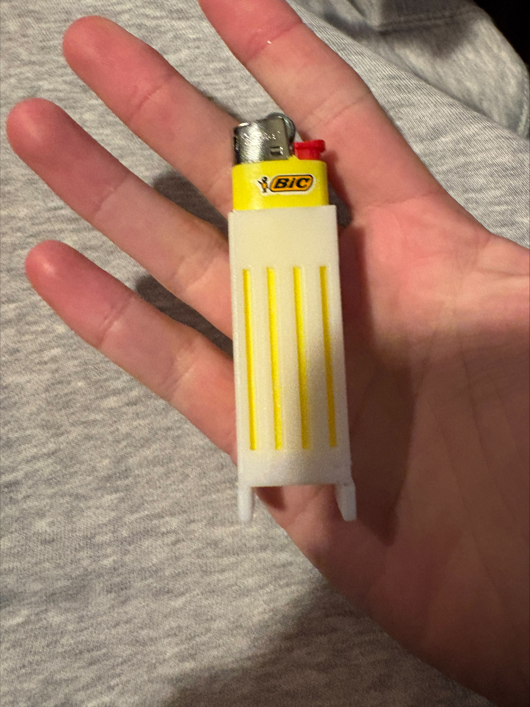

3Dプリンターによるプロダクト制作

誰しも家に一つはあるライターを、もっと雰囲気を変えて他と違った 機能性のあるケースを作りたいと思った。そこで代表的なBICライターを もとに制作を進めた。
縦のラインでスペースをいくつか作り、チェーンなどをつけられるようにした。 また、火が着火しやすいよう何回も制作を繰り返し、大きさも変更を重ねた。 3Dプリンターで作った作品は無機質すぎるため、ネイルのジェルを使って 色付けを行った。
※ YouTubeの仕様・地域制限により埋め込み再生は行っていません
何回か大きさの変更を行ったが、完璧な大きさにたどり着くのは難しいものだった。 また、中にライターを入れる空洞をデザインしたが、プリントする際に サポート素材を使用した。しかし、それが返ってミスとなり取りづらくなり、 ライターも入らなかった。